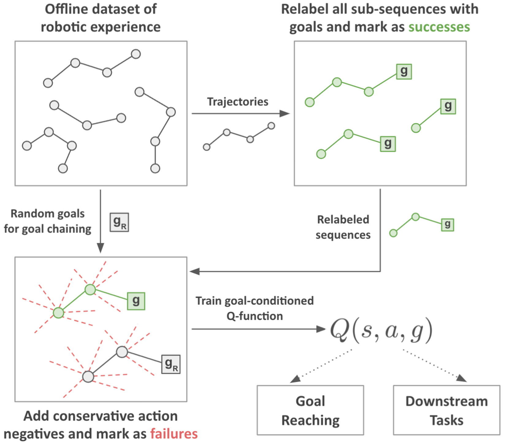

Actionable Models: Unsupervised Offline Reinforcement Learning of Robotic Skills arXiv 2021
- Yevgen Chebotar
- Karol Hausman
- Yao Lu
- Ted Xiao
- Dmitry Kalashnikov
- Jake Varley
- Alex Irpan
- Benjamin Eysenbach
- Ryan Julian
- Chelsea Finn
- Sergey Levine

Abstract
We consider the problem of learning useful robotic skills from previously collected offline data without access to manually specified rewards or additional online exploration, a setting that is becoming increasingly important for scaling robot learning by reusing past robotic data. In particular, we propose the objective of learning a functional understanding of the environment by learning to reach any goal state in a given dataset. We employ goal-conditioned Q-learning with hindsight relabeling and develop several techniques that enable training in a particularly challenging offline setting. We find that our method can operate on high-dimensional camera images and learn a variety of skills on real robots that generalize to previously unseen scenes and objects. We also show that our method can learn to reach long-horizon goals across multiple episodes through goal chaining, and learn rich representations that can help with downstream tasks through pre-training or auxiliary objectives.

Video
Citation
Acknowledgements
We would like to thank Benjamin Swanson, Josh Weaver, Noah Brown, Khem Holden, Linda Luu and Brandon Kinman for their robot operation support, Tom Small for help with videos and project media, Julian Ibarz, Kanishka Rao, and Vincent Vanhoucke for their managerial support, and all of the Robotics at Google team for their support throughout this project.